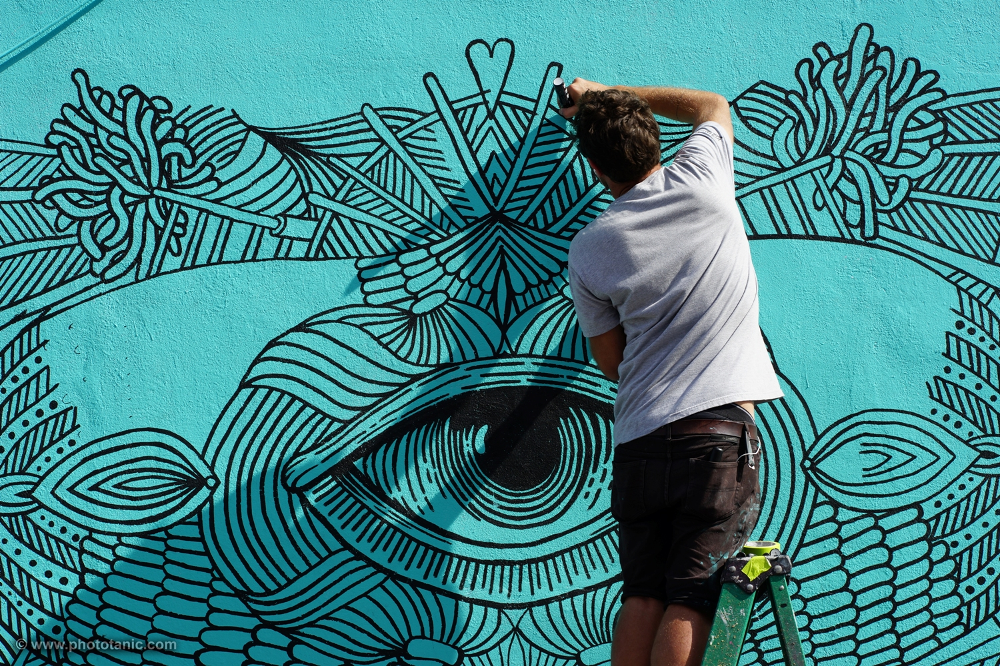

About
History
The Wynwood Walls was conceived by the renowned community revitalizer and placemaker, the late Tony Goldman in 2009. He was looking for something big to transform the warehouse district of Wynwood, and he arrived at a simple idea: “Wynwood’s large stock of warehouse buildings, all with no windows, would be my giant canvases to bring to them the greatest street art ever seen in one place.” Starting with the 25th–26th Street complex of six separate buildings, his goal was to create a center where people could gravitate to and explore, and to develop the area’s pedestrian potential.
The Wynwood Walls became a major art statement with Tony’s commitment to graffiti and street art, a genre that he believed was under appreciated and not respected historically. He wanted to give the movement more attention and more respect: “By presenting it in a way that has not been done before, I was able to expose the public to something they had only seen peripherally.” In 2010, building on the momentum of the year before, Goldman Properties added 10 more artists to their roster of Walls.
The Wynwood Walls has brought the world’s greatest artists working in the graffiti and street art genre to Miami. Jeffrey Deitch co-curated the first successful year of the project in 2009, collaborating with Tony before his appointment as museum director of MOCA Los Angeles. “We have strived for a diverse representation of both American and international artists that encompasses everything from the old school graffiti artists to the newest work being created around the world. The project has truly evolved into what my friend Jeffrey Deitch calls a Museum of the Streets,” Tony had summarized.
From around the United States, Brazil, Belgium, Mexico, Portugal, Ukraine, Portugal, Greece, Spain, Germany, France, England, Japan and Singapore, the celebrated artists who have contributed to the Wynwood Walls include: Os Gemeos, Invader, Kenny Scharf, FUTURA 2000, Dearraindrop, FAILE, BÄST, Shepard Fairey, Aiko, Sego, Saner, Liqen, Nunca, Ben Jones, HOW and NOSM, Ryan McGinness, Jim Drain, Ara Peterson, Retna, Stelios Faitakis, Clare Rojas, The Date Farmers, avaf, ROA, Ron English, Jeff Soto, Logan Hicks, b., PHASE 2, Joe Grillo, COCO 144, Gaia, Vhils, Interesni Kazki, Neuzz, Swoon, Ben Wolf, David Ellis, Barry McGee, Brandon Opalka, Friends With You, DALeast, Faith 47, Santiago Rubino, Daze, Krink, Momo, Miss Van, Lady Pink, Fafi, Sheryo, Kashink, Maya Hayuk and Lakwena.

Since its inception, the Wynwood Walls program has seen over 50 artists representing 16 countries and have covered over 80,000 square feet of walls. They have become must see international destination, with media coverage that has included the New York Times, BBC News, Vanity Fair and Forbes, who mentioned them along with Wynwood on their list of America’s hippest neighborhoods. The Walls were also a focus of the docu-series Here Comes the Neighborhood, which chronicled the creation and evolution of the Wynwood neighborhood.
With each year the Wynwood Walls endeavors to expand its breadth, introduce well known and emerging artists and bring world class art to the community.
Gallery
Wall Gallery
Map
Search for any nearby location
The Wynwood Arts District is home to over 70 Art Galleries, Retail Stores, Antique Shops, Eclectic Bars, and one of the largest open-air street-art installations in the world. Search for a place near you!
Kitchen & Bar
Top Spots
J. Wakefield Brewing
Rating: 4.7/5
Address: 120 NW 24th St
Phone: (786)254-7779
jwakefieldbrewing.com
Wynwood Brewing Company
Rating: 4.7/5
Address: 565 NW 24th St
Phone: (305)982-8732
wynwoodbrewing.com